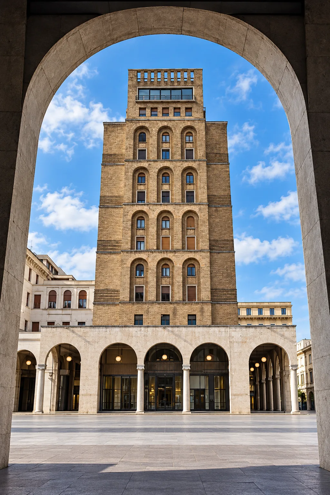
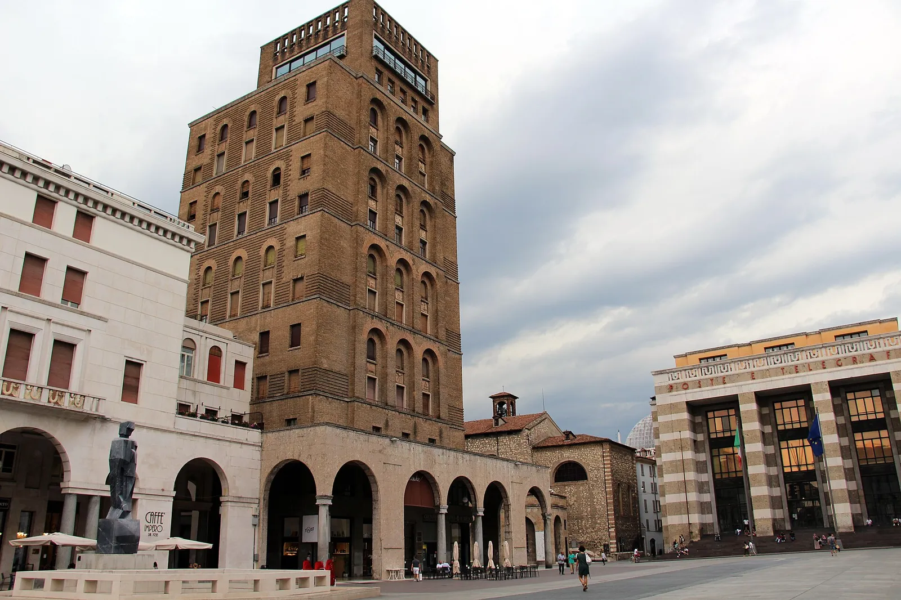
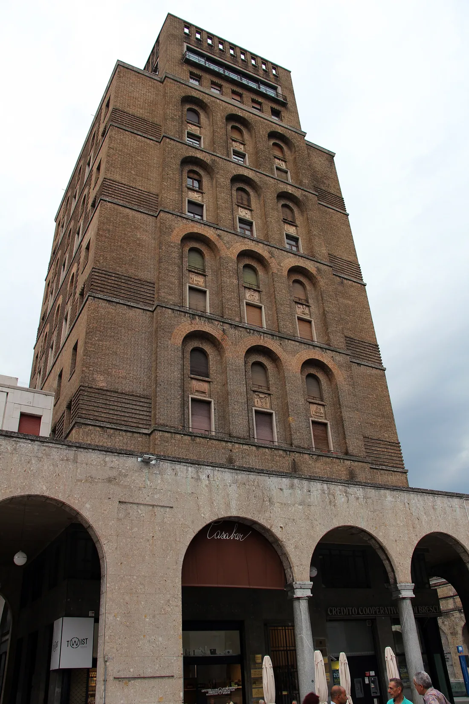
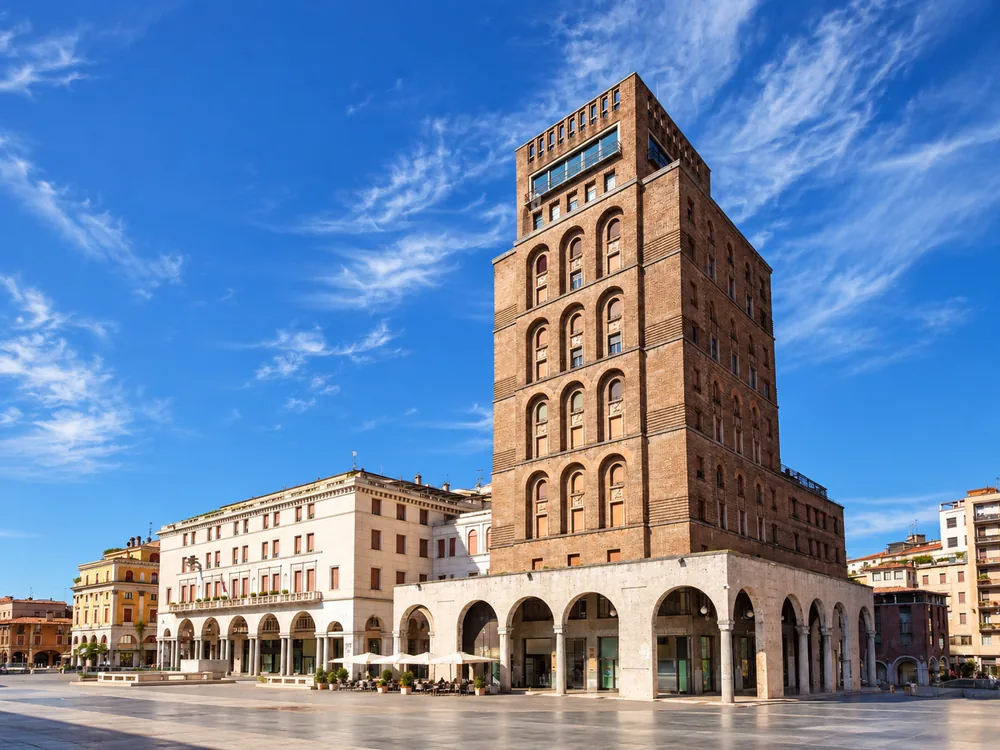

Chi siamo
D’Amico & Partners affianca le imprese nelle decisioni strategiche e nelle operazioni finanziarie e societarie complesse.
Operiamo a fianco degli imprenditori con una visione d’insieme che integra analisi economico-finanziaria, competenze giuridiche e conoscenza delle dinamiche aziendali, per trasformare esigenze e obiettivi in progetti concretamente realizzabili.
Le nostre origini risalgono al 2004, quando il dott. Fulvio D’Amico, Dottore Commercialista e Revisore Legale, grazie all’esperienza maturata nel settore bancario e finanziario, fonda D’Amico & Partners con l’obiettivo di supportare le piccole e medie imprese nella ricerca di risorse finanziarie e nella gestione dei rapporti con il sistema creditizio.
Nel tempo, le necessità delle imprese sono diventate più articolate. Un’operazione non si esaurisce nel reperimento delle risorse: richiede la valutazione dei suoi effetti finanziari, societari e giuridici, la definizione di una struttura sostenibile e il confronto con una pluralità di interlocutori.
La nostra attività si è evoluta per rispondere a questa complessità, passando dal supporto al finanziamento alla progettazione e all’attuazione delle scelte strategiche dell’impresa, strutturandosi in due macro-aree:



«Siamo passati dal finanziare l’operazione al pensare l’operazione insieme all’impresa.»